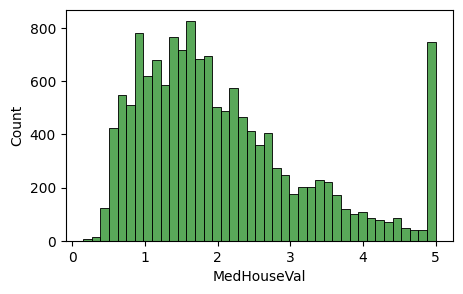

# 라이브러리 불러오기
import numpy as np
import pandas as pd
import matplotlib.pyplot as plt
import seaborn as snsProject1 : 캘리포니아 주택 가격 분석
1. 데이터셋
- scikit-learn 에서 제공하는 캘리포니아 주택 가격 데이터를 이용하여 1990년대 캘리포니아 지역의 주택 가격에 대한 데이터
- 데이터셋은 20,640개의 관측값과 8개의 독립변수(feature), 1개의 종속변수 (target)으로 구성됨
2. 데이터 확인 및 전처리
# 데이터 불러오기
from sklearn.datasets import fetch_california_housing
data= fetch_california_housing(as_frame=True)
df = data.frame
df.head(3)| MedInc | HouseAge | AveRooms | AveBedrms | Population | AveOccup | Latitude | Longitude | MedHouseVal | |
|---|---|---|---|---|---|---|---|---|---|
| 0 | 8.3252 | 41.0 | 6.984127 | 1.023810 | 322.0 | 2.555556 | 37.88 | -122.23 | 4.526 |
| 1 | 8.3014 | 21.0 | 6.238137 | 0.971880 | 2401.0 | 2.109842 | 37.86 | -122.22 | 3.585 |
| 2 | 7.2574 | 52.0 | 8.288136 | 1.073446 | 496.0 | 2.802260 | 37.85 | -122.24 | 3.521 |
# 데이터 확인
df.info()<class 'pandas.core.frame.DataFrame'>
RangeIndex: 20640 entries, 0 to 20639
Data columns (total 9 columns):
# Column Non-Null Count Dtype
--- ------ -------------- -----
0 MedInc 20640 non-null float64
1 HouseAge 20640 non-null float64
2 AveRooms 20640 non-null float64
3 AveBedrms 20640 non-null float64
4 Population 20640 non-null float64
5 AveOccup 20640 non-null float64
6 Latitude 20640 non-null float64
7 Longitude 20640 non-null float64
8 MedHouseVal 20640 non-null float64
dtypes: float64(9)
memory usage: 1.4 MB- 캘리포니아 주택 가격 데이터를 확인한 결과 , 관측값은 20,640개, 변수는 9개로 나타남
- 주택 가격에 영향을 미치는 특성(feature)은 다음과 같음
- MedInc 지역 중위 소득 (10,000 USD)
- HouseAge 주택 연식 (건축 후 경과된 연도 수)
- AveRooms 가구당 평균 방 개수
- AveBedrms 가구당 평균 침실 개수
- Population 지역 내 인구 수
- AveOccup 가구당 평균 거주 인원 수
- Latitude 위도
- Longitude 경도
- MedHouseVal 주택 중위 가격 (100,000 USD)
- 종속변수(target)는 MedhouseVal임
# 데이터 전처리 : 결측값 확인
df.isna().sum()| 0 | |
|---|---|
| MedInc | 0 |
| HouseAge | 0 |
| AveRooms | 0 |
| AveBedrms | 0 |
| Population | 0 |
| AveOccup | 0 |
| Latitude | 0 |
| Longitude | 0 |
| MedHouseVal | 0 |
3. 학습/평가 데이터 분할
- 학습 데이터와 평가 데이터를 7:3 비율로 분할함
# 학습/평가 데이터 분할 (7:3 비율)
X = data.data #feature
y = data.target #target
from sklearn.model_selection import train_test_split
X_train,X_test,y_train,y_test = train_test_split(X, y, test_size=0.3, random_state=42)X_train| MedInc | HouseAge | AveRooms | AveBedrms | Population | AveOccup | Latitude | Longitude | |
|---|---|---|---|---|---|---|---|---|
| 7061 | 4.1312 | 35.0 | 5.882353 | 0.975490 | 1218.0 | 2.985294 | 33.93 | -118.02 |
| 14689 | 2.8631 | 20.0 | 4.401210 | 1.076613 | 999.0 | 2.014113 | 32.79 | -117.09 |
| 17323 | 4.2026 | 24.0 | 5.617544 | 0.989474 | 731.0 | 2.564912 | 34.59 | -120.14 |
| 10056 | 3.1094 | 14.0 | 5.869565 | 1.094203 | 302.0 | 2.188406 | 39.26 | -121.00 |
| 15750 | 3.3068 | 52.0 | 4.801205 | 1.066265 | 1526.0 | 2.298193 | 37.77 | -122.45 |
| ... | ... | ... | ... | ... | ... | ... | ... | ... |
| 11284 | 6.3700 | 35.0 | 6.129032 | 0.926267 | 658.0 | 3.032258 | 33.78 | -117.96 |
| 11964 | 3.0500 | 33.0 | 6.868597 | 1.269488 | 1753.0 | 3.904232 | 34.02 | -117.43 |
| 5390 | 2.9344 | 36.0 | 3.986717 | 1.079696 | 1756.0 | 3.332068 | 34.03 | -118.38 |
| 860 | 5.7192 | 15.0 | 6.395349 | 1.067979 | 1777.0 | 3.178891 | 37.58 | -121.96 |
| 15795 | 2.5755 | 52.0 | 3.402576 | 1.058776 | 2619.0 | 2.108696 | 37.77 | -122.42 |
14448 rows × 8 columns
data.target| MedHouseVal | |
|---|---|
| 0 | 4.526 |
| 1 | 3.585 |
| 2 | 3.521 |
| 3 | 3.413 |
| 4 | 3.422 |
| ... | ... |
| 20635 | 0.781 |
| 20636 | 0.771 |
| 20637 | 0.923 |
| 20638 | 0.847 |
| 20639 | 0.894 |
20640 rows × 1 columns
y_test| MedHouseVal | |
|---|---|
| 20046 | 0.47700 |
| 3024 | 0.45800 |
| 15663 | 5.00001 |
| 20484 | 2.18600 |
| 9814 | 2.78000 |
| ... | ... |
| 17505 | 2.37500 |
| 13512 | 0.67300 |
| 10842 | 2.18400 |
| 16559 | 1.19400 |
| 5786 | 2.09800 |
6192 rows × 1 columns
print(X_train.shape)(14448, 8)4. 데이터 탐색
y_train| MedHouseVal | |
|---|---|
| 7061 | 1.93800 |
| 14689 | 1.69700 |
| 17323 | 2.59800 |
| 10056 | 1.36100 |
| 15750 | 5.00001 |
| ... | ... |
| 11284 | 2.29200 |
| 11964 | 0.97800 |
| 5390 | 2.22100 |
| 860 | 2.83500 |
| 15795 | 3.25000 |
14448 rows × 1 columns
# 요약 통계량 확인
df_train = pd.concat([X_train,y_train],axis=1)
df_train.describe()| MedInc | HouseAge | AveRooms | AveBedrms | Population | AveOccup | Latitude | Longitude | MedHouseVal | |
|---|---|---|---|---|---|---|---|---|---|
| count | 14448.000000 | 14448.000000 | 14448.000000 | 14448.000000 | 14448.000000 | 14448.000000 | 14448.000000 | 14448.000000 | 14448.000000 |
| mean | 3.876892 | 28.575374 | 5.438125 | 1.098033 | 1427.927326 | 3.119236 | 35.650669 | -119.584102 | 2.069240 |
| std | 1.904908 | 12.613634 | 2.453569 | 0.447498 | 1140.225190 | 12.373636 | 2.135742 | 2.002930 | 1.157492 |
| min | 0.499900 | 1.000000 | 0.888889 | 0.333333 | 3.000000 | 0.692308 | 32.550000 | -124.350000 | 0.149990 |
| 25% | 2.567225 | 18.000000 | 4.448928 | 1.006783 | 791.000000 | 2.430380 | 33.940000 | -121.800000 | 1.193000 |
| 50% | 3.539100 | 29.000000 | 5.232422 | 1.049492 | 1168.000000 | 2.817147 | 34.270000 | -118.510000 | 1.793000 |
| 75% | 4.758075 | 37.000000 | 6.060692 | 1.100328 | 1727.000000 | 3.279135 | 37.720000 | -118.010000 | 2.646000 |
| max | 15.000100 | 52.000000 | 141.909091 | 25.636364 | 35682.000000 | 1243.333333 | 41.950000 | -114.310000 | 5.000010 |
- 중위 주택 가격의 평균은 약 20만 달러,표준편차는 11만 달러로 나타남
- 중위 주택 가격의 최소값은 1만4천 달러,1사분위수는 11만 9천 달러, 중앙값은 17만 9천 달러,3사분위수는 26만 4천 달러, 최대값은 50만 달러임을 알 수 있음
- 이를 통해 중위 주택 가격 분포가 치우쳐있어 가격 분포가 비대칭이며 적은 수의 고가 주택의 영향력이 크다는 점, 다수의 주택이 중저가에 분포한다는 점을 파악할 수 있음
# 중위 주택 가격에 대한 분포
plt.figure(figsize=(5, 3))
sns.histplot(df_train['MedHouseVal'], color='forestgreen')
plt.show()
# 중위 주택 가격에 대한 분포
plt.figure(figsize=(5, 2))
sns.boxplot(x='MedHouseVal', color='tomato', data=df_train)
plt.show()# 산점도
sns.pairplot(df_train, height=0.8, plot_kws={'s': 5}, diag_kind='kde')
plt.show()# 상관분석
corr_train = df_train.corr()
upp_mat = np.triu(corr_train)
plt.figure(figsize=(8, 6))
sns.heatmap(corr_train, annot=True, mask=upp_mat, cmap='BrBG', vmin=-1, vmax=1)
plt.title('Correlation Matrix')
plt.show()5. 회귀모델 학습
# 상관관계가 강한 독립변수 선택
# scikit-learn에서 입력 데이터(feature)를 2차원 배열로 요구함
features = ['MedInc', 'HouseAge', 'AveRooms', 'Latitude']
X_train = df_train[features]from sklearn.linear_model import LinearRegression# 선형 회귀모델 생성 및 학습
model = LinearRegression()
model.fit(X_train, y_train)
# 회귀계수(regression coefficient)
pd.DataFrame({'Featurs': features, 'Coefficient': model.coef_})| Featurs | Coefficient | |
|---|---|---|
| 0 | MedInc | 0.435658 |
| 1 | HouseAge | 0.016937 |
| 2 | AveRooms | -0.019505 |
| 3 | Latitude | -0.045071 |
# [참고] 회귀계수의 유의성
import statsmodels.api as sm
X_train_const = sm.add_constant(X_train)
ols_model = sm.OLS(y_train, X_train_const).fit()
print(ols_model.summary()) OLS Regression Results
==============================================================================
Dep. Variable: MedHouseVal R-squared: 0.519
Model: OLS Adj. R-squared: 0.518
Method: Least Squares F-statistic: 3890.
Date: Fri, 25 Jul 2025 Prob (F-statistic): 0.00
Time: 01:35:54 Log-Likelihood: -17332.
No. Observations: 14448 AIC: 3.467e+04
Df Residuals: 14443 BIC: 3.471e+04
Df Model: 4
Covariance Type: nonrobust
==============================================================================
coef std err t P>|t| [0.025 0.975]
------------------------------------------------------------------------------
const 1.6091 0.115 13.957 0.000 1.383 1.835
MedInc 0.4357 0.004 116.405 0.000 0.428 0.443
HouseAge 0.0169 0.001 31.487 0.000 0.016 0.018
AveRooms -0.0195 0.003 -6.652 0.000 -0.025 -0.014
Latitude -0.0451 0.003 -14.213 0.000 -0.051 -0.039
==============================================================================
Omnibus: 3079.717 Durbin-Watson: 1.979
Prob(Omnibus): 0.000 Jarque-Bera (JB): 8182.373
Skew: 1.148 Prob(JB): 0.00
Kurtosis: 5.884 Cond. No. 809.
==============================================================================
Notes:
[1] Standard Errors assume that the covariance matrix of the errors is correctly specified.- 독립변수가 중위 주택 가격에 미치는 영향은 다음과 같음
- 지역 중위 소득이 1만 달러 증가할 때, 중위 주택 가격은 약 4만 3천 달러 증가하는 것으로 나타남. 이는 경제적으로 여유로운 가구일수록 더 비싼 주택에 거주하는 경향이 있음
- 주택 연식이 1년 증가하면, 중위 주택 가격은 약 1,693달러 상승하는 것으로 나타남
- 가구당 평균 방 개수가 1개 늘어날수록, 중위 주택 가격은 약 1,950달러 감소하는 경향이 있음
- 위도가 1도 증가하면, 중위 주택 가격은 약 4,507달러 하락함. 이는 일반적으로 갤리포니아주 남부 지역에 대도시가 집중되어 있어, 해당 지역의 주택 가격이 반영된 것으로 해석됨
6. 회귀모델 평가
# 평가 데이터에서도 학습 데이터에서 사용한 독립변수만 선택
X_test = X_test[features]
# 평가 데이터의 예측값
y_pred = model.predict(X_test)# 회귀모델 평가 : RMSE, 결정계수
from sklearn.metrics import mean_squared_error, r2_score
RMSE = np.sqrt(mean_squared_error(y_test, y_pred))
R2 = r2_score(y_test, y_pred)
print(f'RMSE : {RMSE:.3f}')
print(f'결정계수 : {R2:.3f}')RMSE : 0.794
결정계수 : 0.520- 결과 및 시사점
- 결정계수는 52.0%로 나타남
- RMSE는 0.794로, 주택 중위 가격의 실제값과 예측값이 평균적으로 약 8만 달러 차이가 있다는 것을 의미함 +학습 데이터에서 주택 중위 가격의 평균은 약 20만 달러인 점을 고려하면, 모델의 평균 오차는 약 25% 수준임을 알 수 있음
- 따라서 평균 오차가 비교적 큰 편이므로, 모델 성능 개선이 필요한 것으로 판단됨